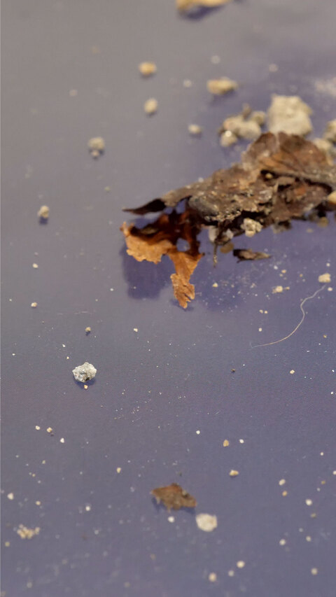 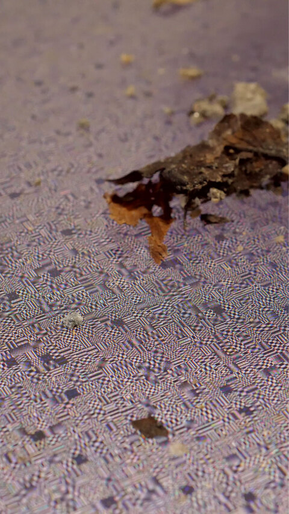 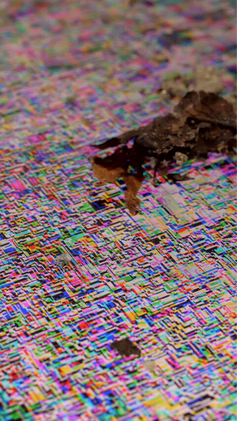
Equilibrium is a three-channel video installation. It is based on the artist’s former artwork, E, the series of digital images.
In E, three images are juxtaposed, the original one and two encoded through the wrongly implemented JPEG and PNG encoders. Even the original image is just a photograph of an empty sky, and the other two are, so to speak, broken garbage; every image has no significant representation.
This installation, Equilibrium, consists of three synchronized videos, each showing a close-up of the LCD monitor displaying one of E’s three images. Though the camera in each video moves on the same trajectory, we can recognize these three shots taken individually because of their subtle synchronization clutters. The videos capture the luminescence of each pixel on the monitor and also its dirty surface with sand and dust. The surface becomes a ground plane of real and digital debris.
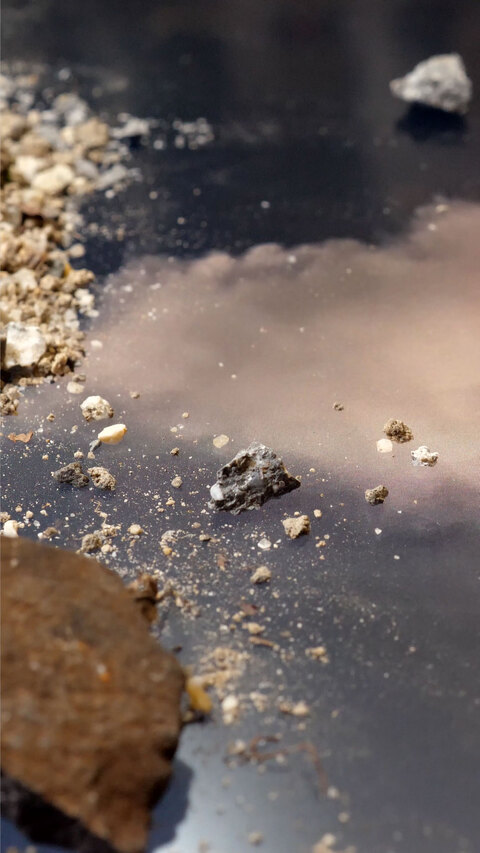 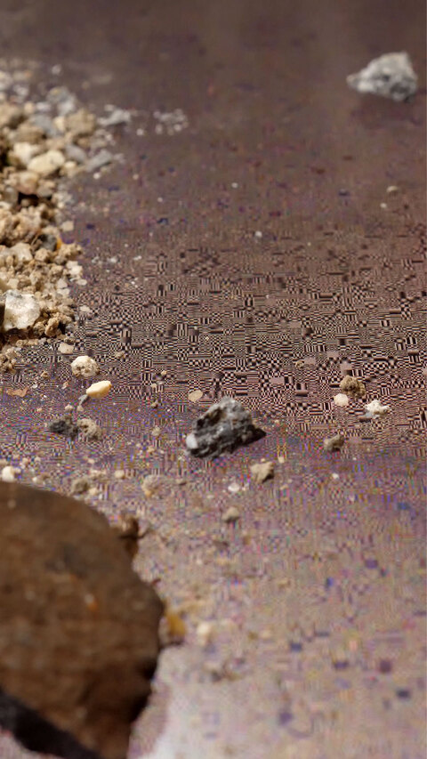 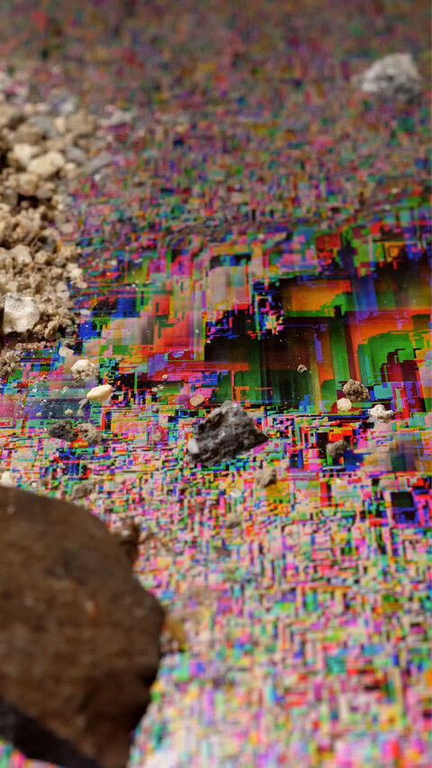 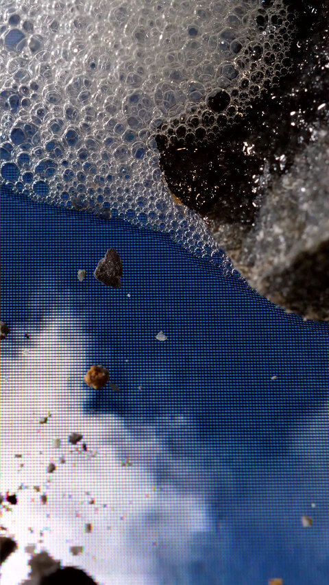 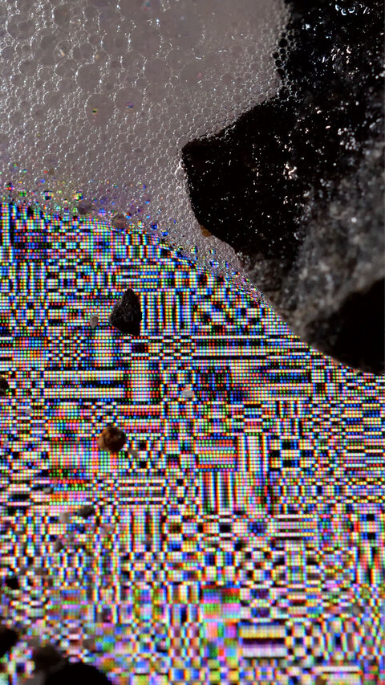 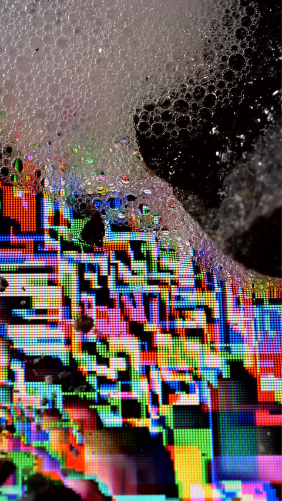 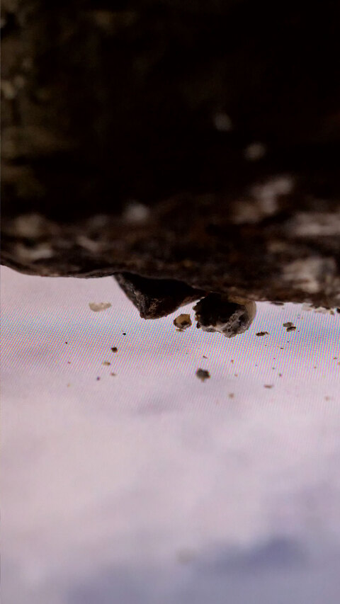 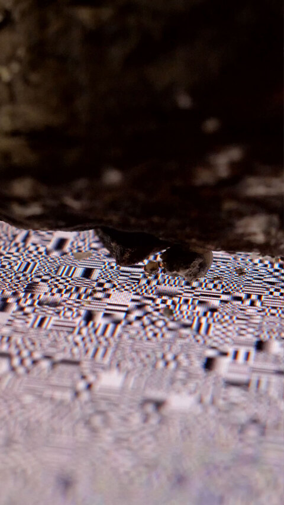 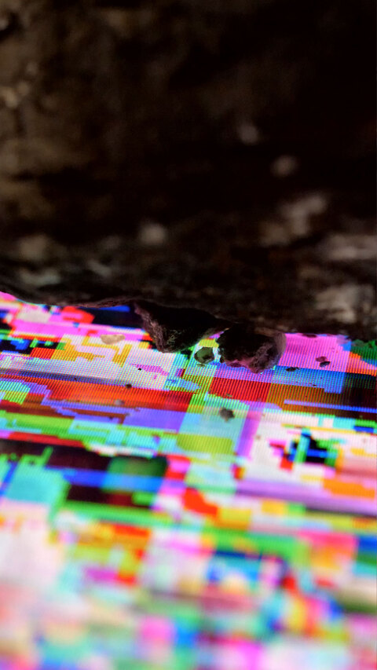 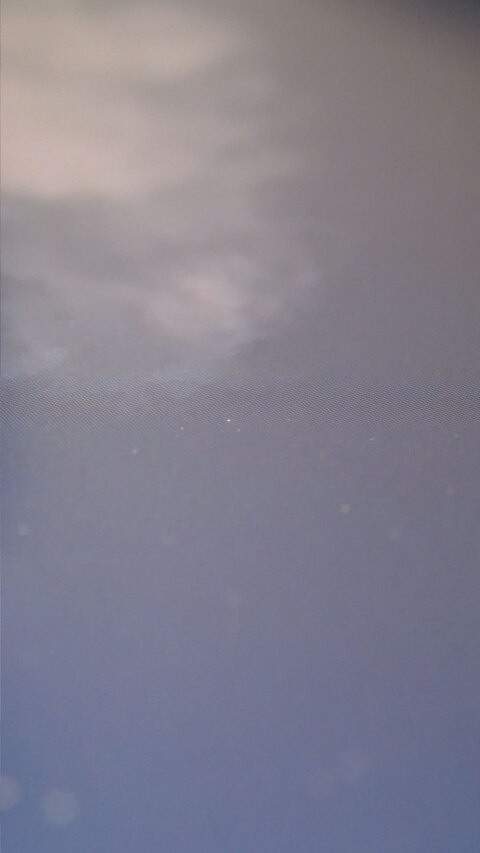 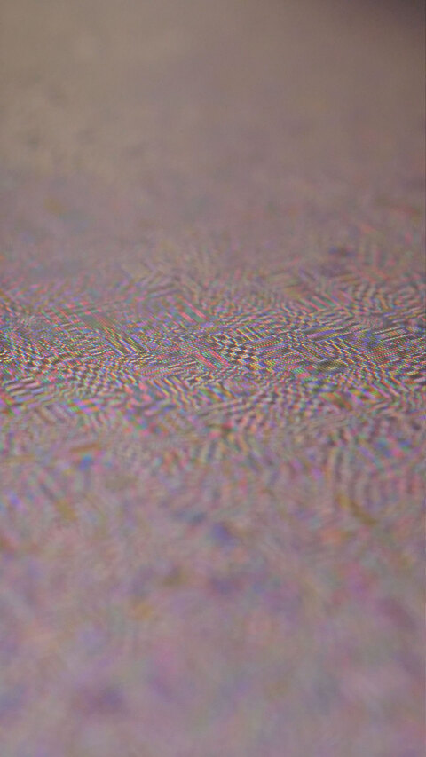 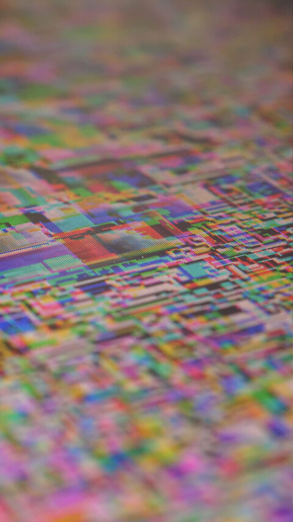
This installation was shown as the solo exhibition at Sony Park Mini, Ginza in 2022.
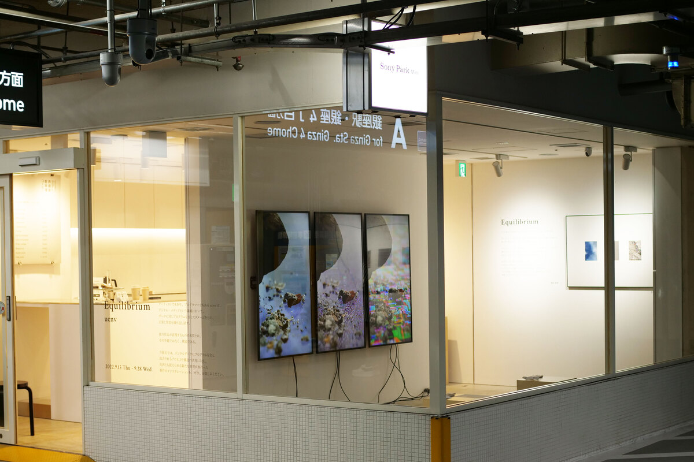 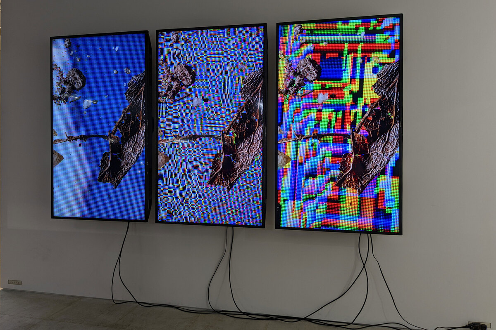